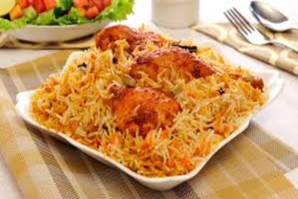

Chicken Biryani

Ingredients:
- Water 1⁄2 Cup
- Turmeric powder 1⁄2 tsp
- Salt 1⁄2 tbs or to taste
- Cumin seeds 1⁄2 tbs
- Ginger garlic paste 2 tbs
- Onion sliced 2 medium
- Chicken 700 gms
- Rafhan corn oil 1⁄2 Cup
- Green cardamom 2-3
- Black cardamom 2
- Black peppercorns 1⁄2 tsp
- Cloves 5-6
- Cinnamon stick 2-3
- Bay leaves 2
- Coriander powder 1 & 1⁄2 tbs
- Red chili powder 2 tsp or to taste
- Garam masala powder 1⁄2 tbs
- Black pepper powder 1 tsp
- Tomatoes chopped 2 medium
- Yogurt whisked 1⁄2 Cup
- Fresh coriander chopped 1⁄2 Cup
- Mint leaves chopped 1⁄2 Cup
- Green chilies 3-4
- Dried plums 8-9
- Onion fried
- Rice basmati 700 gms (soaked & boiled until 3/4th done)
- Biryani masala 1 tbs
- Lemon slices
- Kewra water 2 tbs
- Yellow food colour 1⁄2 tsp or as required
- fried onion
Instructions:
- In wok,add water,turmeric powder, salt,cumin seeds,ginegr garlic paste and mix well.
- Add onion,chicken and mix well.
- Cover and cook on low flame for 5-6 minutes then cook on high flame for 2-3 minutes & set aside. -In pot,add corn oil,green cardamom,black cardamom,black peppercorns,cloves, cinnamonsticks, bay leaves and mix.
- Add coriander powder,red chili powder,garam masala powder,black pepper powder,mix well and cook for 2 minutes.
- Add tomatoes and mix well.
- Add yogurt and mix well.
- Now add cooked chicken mixture,mix well and cook for 4-5 minutes.
- Add fresh coriander,mint leaves,green chilies,mix well and cook on high flame until oil separates. -Add dried plums and mix well.
- Take out half of the chicken mixture in a bowl and set aside.
- Add fried onion,boiled rice,remining chicken gravy,fried onion,biryani masala,lemon slices and remaining boiled rice.
- In kewra water,add yellow food color and mix well.
- Add dissolve food color,fried onion,cover and steam cook on low flame for 10-12 minutes.